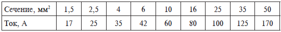

Электропроводка и ее элементы.


Передача электрической энергии осуществляется при помощи материалов, подходящих для этого не только с точки зрения способности проводить электроток, но и с точки зрения технического удобства. Так, например, многие соли являются проводниками, но они не годятся для изготовления транспортных сетей для электротока.
Рано или поздно появляется необходимость заменять и устанавливать розетки, светильники, ремонтировать участки электропроводки, а то и полностью заменять ее. При проведении работ с электропроводкой необходимо руководствоваться Правилами устройства электроустановок (ПУЭ), содержащими требования по обеспечению в электропроводках пожарной и электробезопасности. В зависимости от этих требований применительно к виду помещения, характеру нагрузки, условиям эксплуатации определяется вид электропроводки, марка провода или кабеля, сечение жил, способ крепления проводов и оконечных устройств, типы соединений, характеристики устройств защиты и т. д.
Для обеспечения требований ПУЭ нужно знать существующие типы проводок, схему проводки в квартире, характеристики проводов, принцип работы устройств, входящих в электропроводку, правила монтажа и приемы работ с инструментом, методы поиска и устранения неисправностей. Соблюдение этих правил поможет уберечься от неприятных неожиданностей, связанных с электрической сетью.
В большинстве частных домов и почти во всех квартирах применяется скрытый вариант электропроводки. При монтаже скрытой проводки в оштукатуренных стенах и потолках пробивают неглубокие борозды, в которые укладываются электрические провода. После завершения монтажа электропроводки борозды заштукатуриваются цементным раствором или алебастром. Если монтаж скрытой проводки производится в строящемся доме, то нужда в пробивке борозд отпадает. В этом случае сначала производится монтаж проводки, провода закрепляются гвоздями, вбиваемыми в раствор между кирпичами, или примазыванием их к стене алебастром в нескольких точках, потом делается оштукатуривание стен и потолка, и провода оказываются под слоем штукатурки.
В местах соединений проводов устанавливаются разветвителmные коробки, в которые прячутся все скрутки проводов. Разветвительные коробки должны быть установлены на уровне поверхности стены, заподлицо с ней. Закрываются коробки из эстетических соображений и безопасности пластмассовыми крышками. Для установки розеток и выключателей используются такие же разветвительные коробки. Они бывают изготовленными из стали или пластмассы. Розетки и выключатели применяются при монтаже тоже в исполнении для скрытой проводки. После установки они практически не выступают над поверхностью стен.
В квартирах монтаж скрытой проводки осуществляется в каналах, заранее сделанных в бетонных стенах и перекрытиях. Поэтому живущим в квартирах нужно быть очень осторожными при различных переключениях электрических проводов и замене выключателей и розеток. Чтобы заменить или даже дорастить неосторожно обломленный электропровод, придется, например, сбивать кафельную плитку или срывать недавно наклеенные обои, иначе до места соединения проводов не добраться.
Открытая проводка делается по поверхности стен и потолков. Для ее монтажа используют медные или алюминиевые провода с резиновой изоляцией, покрытые слоем поливинилхлорида. Можно для монтажа применять также медные и алюминиевые провода с изоляцией из одного поливинилхлорида, но только при наличии у провода разделительного основания, отделяющего одну жилу провода от другой. Электрические провода открытой проводки закрепляются на стенах и потолке при помощи роликов, изготовленных из изолирующего материала – фарфора. В каждом ролике имеется ось отверстия, через которое продевается гвоздь, крепящий ролик с надетыми на него проводами к стене.
Наименьшее сечение провода, используемого для монтажа открытой проводки: медного – 1 мм , алюминиевого – 2,5 мм . Провода при монтаже горизонтального участка проводки по стенам кладут параллельно линиям пересечения стен и потолка на расстоянии не менее 100 мм и не более 200 мм от потолка или карниза. Вертикальную часть проводки (спуски, подъемы) выполняют перпендикулярно плоскости потолка. Около дверей и окон провод прокладывают на расстоянии 100 мм от края обрамления двери или окна. Ролики для крепления провода располагаются на расстоянии 50 см один от другого.
Выключатели и розетки при открытой проводке крепятся не непосредственно к поверхности стены, а на специальные изоляционные подкладки, сделанные из сухого дерева и называемые подрозетниками.Подрозетник крепится к стене длинным шурупом, а к нему уже при помощи двух маленьких шурупов прикручивается выключатель или розетка. Сами выключатели и розетки для открытой проводки отличаются от предназначенных для скрытой проводки и по внешнему виду, и по способу закрепления на стене, поскольку вследствие специфики монтажа располагаются не в стене, а на ее поверхности. В подвале дома из-за опасных условий (сырость, токопроводящие полы и стены) выключатель ставить нельзя, его устанавливают на стене кухни.
Материал проводника и сечение кабеля . Для монтажа проводки в современных домах и квартирах используется медный или алюминиевый провод в поливинилхлоридной изоляции. Как считают специалисты-электротехники, медь в качестве материала для проводов предпочтительнее алюминия. Она имеет большую проводимость и менее подвержена коррозии. К тому же по сравнению с медью алюминий непрочен и при нескольких изгибах может попросту сломаться. Отрицательным свойством алюминия является и его быстрая окисляемость в случае соприкосновения с воздухом и образование на поверхности тугоплавкой окисной пленки. Она плохо проводит электрический ток, а значит препятствует созданию хорошего контакта. Место с плохим контактом будет греться, из-за чего придется периодически проверять места крепления алюминиевых жил к электрическим приборам. При креплении в винтовых зажимах алюминий проявляет другой свой недостаток – низкий предел текучести. В результате этого алюминий выскальзывает из-под зажима («течет»), ослабляя контакт.
Таким образом, алюминиевые провода, находящиеся в распределительных коробках и других устройствах, где для соединения используются зажимы, требуют периодической проверки и поджатая. Помимо этого, при контакте алюминия с медью образуется гальваническая пара, в которой алюминий, подвергаясь электрокоррозии, разрушается, что ведет к дополнительному ухудшению соединения. При всем при этом у алюминия есть и два существенных преимущества – он гораздо дешевле меди и более гибок, что ускоряет скорость монтажа.
Для правильного выбора сечения провода необходимо учитывать величину максимально потребляемого нагрузкой тока. Значения токов легко определить, зная паспортную мощность потребителей по формуле 1 = Р/220 (например, для электрообогревателя мощностью 2000 Вт ток составит 9 А, для лампочки 60 Вт – 0,3 А). Зная суммарный ток всех потребителей и учитывая соотношения допустимой для провода токовой нагрузки на сечение провода, можно определить, подойдет ли имеющийся провод или же необходимо покупать другой.
Кабель обычно состоит из 2–4 жил. Сечение (точнее, площадь поперечного сечения) жилы определяется ее диаметром: S= 0,78 d , где d — диаметр круга. Исходя из практических соображений, при малых значениях силы тока сечение медной жилы берут не менее 1 мм , а алюминиевой – 2 мм . При достаточно больших токах сечение провода выбирают по подключаемой мощности. Обычно исходят из расчета, что нагрузка величиной 1 кВт требует 1,57 мм сечения жилы. Отсюда следуют приближенные значения сечений провода, которых следует придерживаться при выборе его диаметра. Для алюминиевых проводов это 5 А на 1 мм , для медных – 8 А на 1 мм . Проще говоря, если имеется проточный водонагреватель на 5 кВт, то подключать его надо проводом, рассчитанным не менее чем на 25 А, и для медного провода сечение должно быть не менее 3,2 мм . Необходимо помнить, из ряда предпочтительных величин сечений (0,75; 1; 1,5; 2,5; 4; 6 мм и т. д.) для алюминиевых проводов сечение выбирают на ступень выше, чем для медных, так как их проводимость составляет примерно 62 % от проводимости медных. Например, если по расчетам для меди нужна величина сечения 2,5 мм , то для алюминия следует брать 4 мм , если же для меди нужно 4 мм , то для алюминия – 6 мм и т. д.
Если есть возможность, кабель лучше выбирать большего поперечного сечения, чем требуется, тогда можно будет подключать мощные потребители тока. Кроме того, необходимо проверить, согласуется ли сечение проводов с максимальной фактической нагрузкой, а также с током защитных предохранителей или автоматического выключателя, которые обычно находятся рядом со счетчиком.
Выбор марки кабеля или провода . При выборе типа провода нужно учитывать допустимое напряжение пробоя изоляции (например, нельзя для электрической проводки на сетевое напряжение 220 В использовать провода от телефонной линии) с сечением не менее 4 мм из расчета достаточной механической прочности. Если требуется с большей точностью знать длительно допустимую токовую нагрузку для медных проводов и кабелей от площади их сечения, можно воспользоваться таблицей 6.
Таблица 6

Провода и кабели различаются по количеству жил (от 1 до 37), сечению (от 0,75 до 800 мм ) и номинальному рабочему напряжению. Провода изготавливаются с изоляцией на напряжение 380, 660 и 3000 В переменного тока, кабели – на любое напряжение. У изолированного провода токопроводящая жила заключена в оболочку из резины, поливинилхлорида или винипласта. Для предохранения от механических повреждений и воздействий внешней среды изоляция некоторых марок проводов покрыта снаружи хлопчатобумажной оплеткой, пропитанной противогнилостным составом. Провода, предназначенные для прокладки в местах, где имеется повышенная опасность механического повреждения, защищаются дополнительной оплеткой из стальной оцинкованной проволоки.
Марка кабеля (провода) – это буквенное обозначение, характеризующее материал токопроводящих жил, изоляцию, степень гибкости и конструкцию защитных покровов. В маркировке отечественных проводов используются следующие обозначения:
– первая буква указывает на материал токопроводящей жилы (например, А – алюминий); отсутствие в марке провода буквы означает, что токопроводящая жила выполнена из меди;
– вторая буква обозначает соответственно провод или шнур;
– третья – П или Ш – материал изоляции (например, Р – резина, В – поливинилхлорид, П – полиэтилен).
В марках проводов и шнуров могут также присутствовать буквы, характеризующие другие элементы конструкции: О – оплетка, Т – для прокладки в трубах, П – плоский, Ф – металлическая фальцованная оболочка, Г – гибкий и т. д.